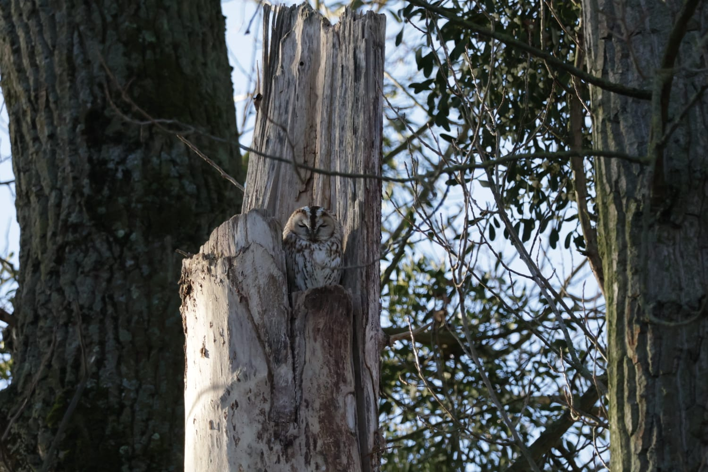
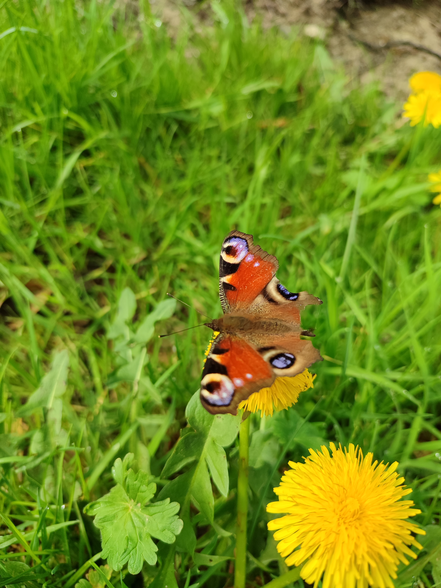

Flora & Fauna
Wer im Westen Wildnis sehen will kann es finden. Ob Bergische Drachen, Eifeltiger oder bunte Vögel am Rhein. Ist man draußen unterwegs sieht man einiges. Hier sind zumindest ein paar Eindrücke...

Zauneidechse, die Bergischen Drachen in Solingen

Waldohreule in der Urdenbacher Kämpe

Graureiher an der Ruhr

Eichhörnchen an der Ruhr

Gelbes Windröschen

Der Große Fuchs

Fliegenpilz

Fingerhut

Tagpfauenauge

Feuersalamander

Buschwindröschen

Buntgrabläufer

Blindschleiche